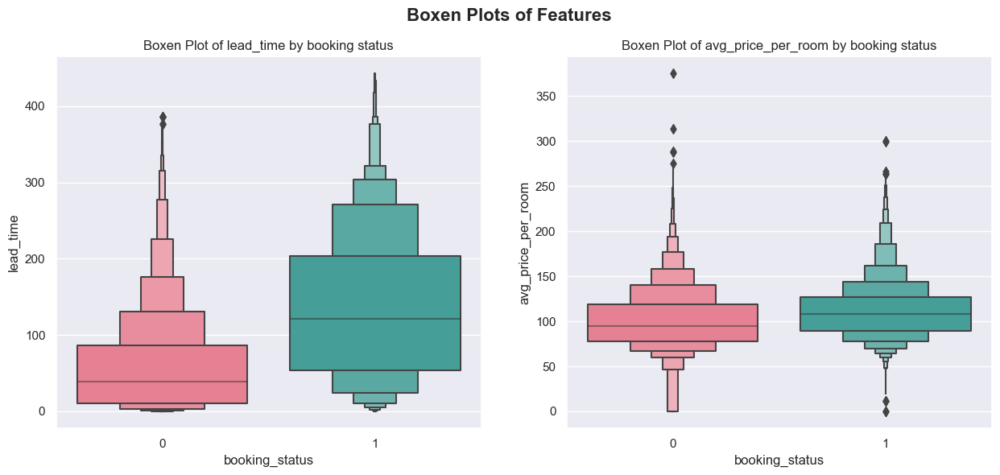
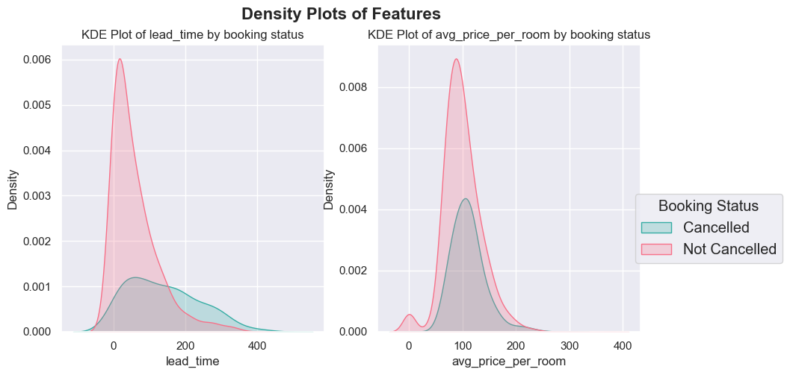
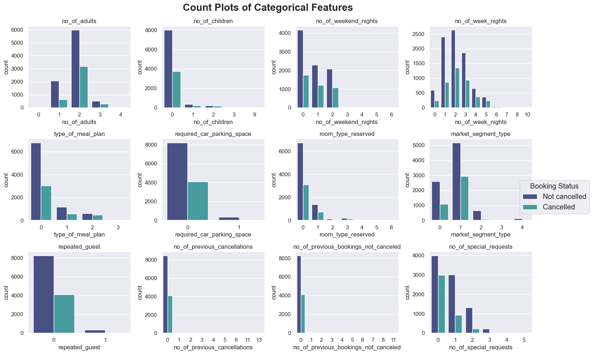
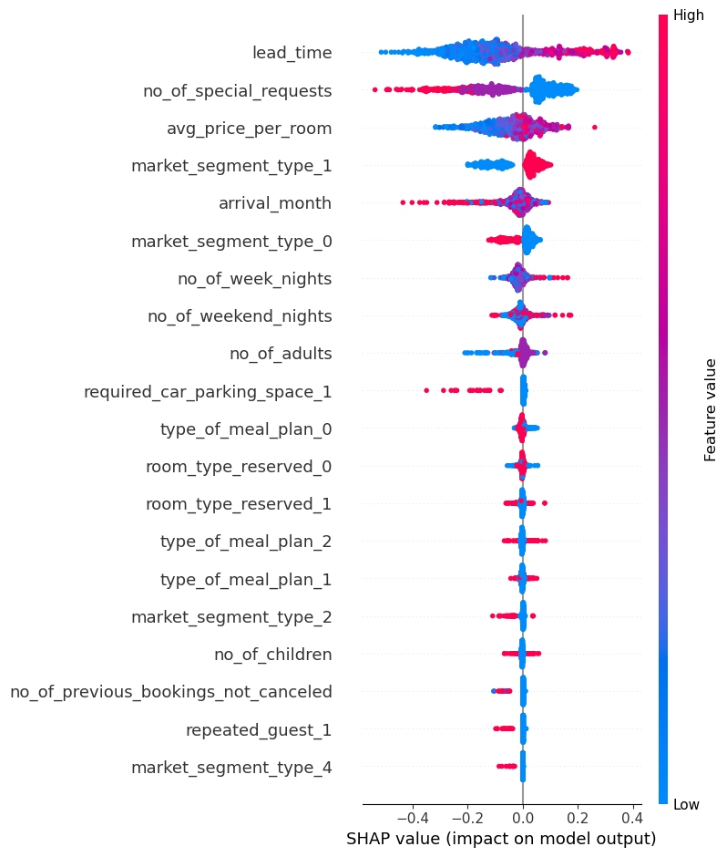
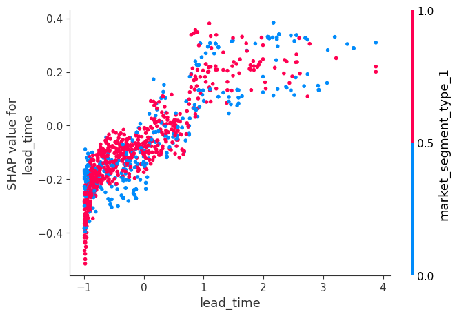
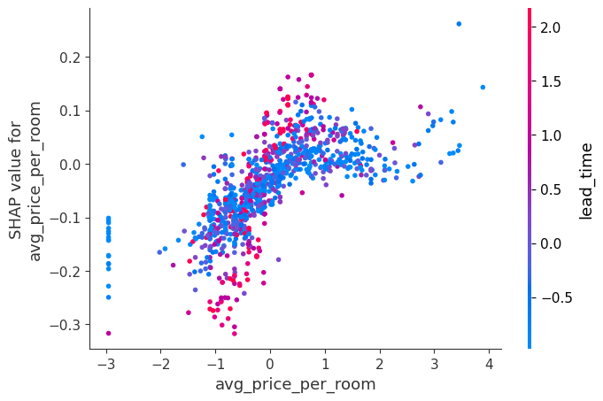

The behavior of customers and booking options have thoroughly altered by the online hotel reservation channels. A significant number of reservations are canceled always, mostly due to cancellations or no-shows. Cancellations can be caused by a variety of factors, such as scheduling conflicts, changes in plans, etc. This is observed more frequently due to the fact that hotels often make it easier for guests to cancel their reservations by offering free or low cost cancellation options. Although this benefits the guests heavily, it may risk the hotel losing on potential revenue.
Therefore, the outcome of this project is to assist the hotel owners to better understand whether a customer will confirm the booking or cancel it by developing and implementing machine learning methodologies.
In this exploratory data analysis (EDA) section, we load the training dataset from a CSV file and prepare it for analysis. We split the data into training and testing sets, with 70% allocated for training. Then, we provide a summary of the descriptive statistics for the training dataset to gain insights into its distribution and characteristics.
Show the code
data = pd.read_csv("train__dataset.csv")X = data.drop("booking_status", axis=1)y = data["booking_status"]X_train, X_test, y_train, y_test = train_test_split(X, y, random_state=111, train_size =0.7) # setting a random state to make it reproducibledf_train = X_train.join(y_train)df_train.describe()
no_of_adults
no_of_children
no_of_weekend_nights
no_of_week_nights
type_of_meal_plan
required_car_parking_space
room_type_reserved
lead_time
arrival_year
arrival_month
arrival_date
market_segment_type
repeated_guest
no_of_previous_cancellations
no_of_previous_bookings_not_canceled
avg_price_per_room
no_of_special_requests
booking_status
count
12695.000000
12695.000000
12695.000000
12695.000000
12695.000000
12695.000000
12695.000000
12695.000000
12695.000000
12695.000000
12695.000000
12695.000000
12695.000000
12695.000000
12695.000000
12695.000000
12695.000000
12695.000000
mean
1.845845
0.106892
0.808980
2.214100
0.313037
0.031902
0.336510
84.945884
2017.821189
7.441985
15.628909
0.806459
0.026073
0.022922
0.159354
103.513689
0.616384
0.324143
std
0.517027
0.410776
0.871795
1.418276
0.623953
0.175747
0.774089
85.788163
0.383209
3.081619
8.779931
0.645516
0.159359
0.379929
1.785368
35.090118
0.790173
0.468072
min
0.000000
0.000000
0.000000
0.000000
0.000000
0.000000
0.000000
0.000000
2017.000000
1.000000
1.000000
0.000000
0.000000
0.000000
0.000000
0.000000
0.000000
0.000000
25%
2.000000
0.000000
0.000000
1.000000
0.000000
0.000000
0.000000
17.000000
2018.000000
5.000000
8.000000
0.000000
0.000000
0.000000
0.000000
80.750000
0.000000
0.000000
50%
2.000000
0.000000
1.000000
2.000000
0.000000
0.000000
0.000000
57.000000
2018.000000
8.000000
16.000000
1.000000
0.000000
0.000000
0.000000
99.450000
0.000000
0.000000
75%
2.000000
0.000000
2.000000
3.000000
0.000000
0.000000
0.000000
125.000000
2018.000000
10.000000
23.000000
1.000000
0.000000
0.000000
0.000000
120.000000
1.000000
1.000000
max
4.000000
9.000000
6.000000
17.000000
3.000000
1.000000
6.000000
443.000000
2018.000000
12.000000
31.000000
4.000000
1.000000
13.000000
58.000000
375.500000
5.000000
1.000000
Based on the summary statistics provided, here are some initial observations about the data: * There are 12,695 observations in the train dataset. * The average number of adults per booking is 1.85 while the average number of children per booking is 0.11 * On average people visit between July and August, meaning the hotel is busier during summer holidays. * The average number of nights stayed over a weekend is 0.81 while the average number of nights stayed during the week is 2.21 * The average lead time for bookings is 84.95 days, with a standard deviation of 85.79. * Only 2.6% of bookings are from repeated guests on average * The average price per room is 103.51 * The majority of bookings (67.6%) are confirmed, while the remaining 32.4% are canceled.
Data visualization:
To identify patterns or trends in the data relative to target class, we can create visualisations of some features for each target classes to see the differences between them.
Outlier Analysis of Numerical Features:
Show the code
# Define the featuressns.set_theme(style="darkgrid")features = ['lead_time', 'avg_price_per_room']fig, axes = plt.subplots(nrows =1, ncols=len(features), figsize=(15, 6))fig.suptitle("Boxen Plots of Features", fontsize=16, fontweight='bold')# Iterate over featuresfor i, feature inenumerate(features): sns.boxenplot(data=df_train, y = feature, x ='booking_status', palette="husl", ax=axes[i]) axes[i].set_title("Boxen Plot of "+ feature +" by booking status")

The provided boxen plots offer insights into booking behavior based on lead time and average room price. For lead time, bookings not cancelled tend to have shorter lead times, possibly indicating last-minute reservations, while cancelled bookings show longer and more varied lead times, suggesting advanced bookings with diverse lead times. For average room price, non-cancelled bookings exhibit similar median prices as cancelled bookings. This insight challenges the initial observation and prompts the need for further analysis to better understand guest booking preferences and cancellation behaviors.
Distribution Analysis of Numerical Features:
Show the code
# Define the featuresfeatures = ['lead_time', 'avg_price_per_room']fig, axes = plt.subplots(nrows =1, ncols=len(features), figsize=(10, 5))fig.suptitle("Density Plots of Features", fontsize=16, fontweight='bold')# Iterate over featuresfor i, feature inenumerate(features): sns.kdeplot(data=df_train, x=feature, hue="booking_status", bw_adjust=2, fill=True, palette="husl", ax=axes[i], legend=False) axes[i].set_title("KDE Plot of "+ feature +" by booking status")fig.legend(title ="Booking Status", labels=["Cancelled", "Not Cancelled"], bbox_to_anchor=(1.1, 0.5), fontsize ="large", title_fontsize='large')

The histograms reveal distinct patterns in booking behavior and cancellation likelihood based on lead time and average room price. For lead time, bookings are predominantly confirmed when the interval between booking and arrival is short, with cancellations becoming more prevalent as lead time increases beyond 100 days. Conversely, guests are more likely to confirm bookings when the lead time is under 100 days. Regarding average room price, confirmed bookings consistently outnumber cancellations across all price ranges. However, the highest confirmation rates occur when the average room price falls between 50 and 125. Beyond this range, cancellation probabilities increase, approaching parity with confirmation probabilities. In summary, shorter lead times and moderate room prices between 50 and 125 are associated with higher confirmation rates, while longer lead times are associated with increased cancellation probabilities. These insights can inform hotel management strategies to optimize booking processes and minimize cancellation rates.
Distribution Analysis of Categorical Features:
Show the code
import seaborn as snsimport matplotlib.pyplot as plt# Define the categorical featurescat_features = ['no_of_adults', 'no_of_children', 'no_of_weekend_nights', 'no_of_week_nights', 'type_of_meal_plan', 'required_car_parking_space', 'room_type_reserved', 'market_segment_type', 'repeated_guest', 'no_of_previous_cancellations', 'no_of_previous_bookings_not_canceled', 'no_of_special_requests']# Create subplots with 3 rows and 4 columnsfig, axes = plt.subplots(nrows=3, ncols=4, figsize=(15, 10))fig.suptitle("Count Plots of Categorical Features", fontsize=20, fontweight='bold')# Iterate over featuresfor i, feature inenumerate(cat_features):# Filter the DataFrame to include only the top N most frequent categories top_categories = df_train[feature].value_counts().index[:10] filtered_df = df_train[df_train[feature].isin(top_categories)] row = i //4# Calculate the row index col = i %4# Calculate the column index sns.countplot(data=filtered_df, x=feature, hue="booking_status", palette="mako", ax=axes[row, col]) axes[row, col].set_title(feature) axes[row, col].legend().set_visible(False)fig.legend(title ="Booking Status", labels=["Not cancelled", "Cancelled"], bbox_to_anchor=(1.1, 0.5), fontsize ="large", title_fontsize='large')plt.tight_layout()plt.show()

Based on the bar plots:
Number of Adults and Children: Most bookings are made for one or two adults, and very few include children. This suggests that the hotel is primarily used by adults, possibly for business or couples on vacation.
Number of Weekend Nights and Week Nights: Guests typically stay from one to four nights during both weekends and weekdays. This could indicate that the hotel is popular for short stays.
Type of Meal Plan: A specific type of meal plan is predominantly chosen by guests. This could be due to the convenience or cost-effectiveness of this plan.
Required Car Parking Space: A large number of guests do not require car parking spaces, which might suggest that many guests use public transportation or other means of travel.
Room Type Reserved: Various room types are reserved with one being more common. This could indicate a preference for a particular room type, possibly due to cost, size, or amenities.
Market Segment Type: There’s a notable difference in market segment types between cancelled and not cancelled bookings. This could suggest that certain market segments are more likely to cancel their bookings.
Repeated Guest: Most guests are not repeated ones, indicating that the hotel has a diverse guest population.
Number of Previous Cancellations and Bookings Not Cancelled: A majority have zero previous cancellations and many have no prior non-cancelled reservations. This could suggest that most guests are first-time visitors.
Number of Special Requests: Special requests during stays are relatively uncommon, which might indicate that most guests’ needs are met by the standard amenities provided by the hotel.
These observations provide valuable insights into the hotel’s guest demographics and their preferences, which could be useful for making strategic decisions to improve guest satisfaction and business performance. However, these are just observations based on the given plots, and further analysis would be needed to draw more concrete conclusions.
We separate features into numerical and categorical types because they require different types of transformations. We apply one-hot encoding on the categorical features and standard scaling on the numerical features. In this project, we will approach different methods and employ different models. One of such models is a logistic regression model.
Below is a helper function to make calculating validation scores easier:
Show the code
def mean_std_cross_val_scores(model, X_train, y_train, scoring, **kwargs):""" Returns mean and std of cross validation Parameters ---------- model : scikit-learn model X_train : numpy array or pandas DataFrame X in the training data y_train : y in the training data Returns ---------- pandas Series with mean scores from cross_validation """if scoring =="f1": scores = cross_validate(model, X_train, y_train, scoring ="f1", **kwargs) mean_scores = pd.DataFrame(scores).mean() std_scores = pd.DataFrame(scores).std() out_col = []for i inrange(len(mean_scores)): out_col.append((f"%0.3f (+/- %0.3f)"% (mean_scores[i], std_scores[i])))return pd.Series(data=out_col, index=mean_scores.index)else: scores = cross_validate(model, X_train, y_train, **kwargs) mean_scores = pd.DataFrame(scores).mean() std_scores = pd.DataFrame(scores).std() out_col = []for i inrange(len(mean_scores)): out_col.append((f"%0.3f (+/- %0.3f)"% (mean_scores[i], std_scores[i])))return pd.Series(data=out_col, index=mean_scores.index)
Linear models:
Show the code
results_dict = {}C_vals =10.0** np.arange(-2, 2, 0.5)for C in C_vals: lr_pipe = make_pipeline(preprocessor, LogisticRegression(max_iter=1000, C=C)) results_dict["Logistic Regression with C="+str(C)] = mean_std_cross_val_scores( lr_pipe, X_train, y_train, return_train_score=True, scoring ="accuracy" )pd.DataFrame(results_dict)
Logistic Regression with C=0.01
Logistic Regression with C=0.03162277660168379
Logistic Regression with C=0.1
Logistic Regression with C=0.31622776601683794
Logistic Regression with C=1.0
Logistic Regression with C=3.1622776601683795
Logistic Regression with C=10.0
Logistic Regression with C=31.622776601683793
fit_time
0.033 (+/- 0.005)
0.035 (+/- 0.002)
0.048 (+/- 0.002)
0.066 (+/- 0.003)
0.095 (+/- 0.007)
0.132 (+/- 0.007)
0.164 (+/- 0.007)
0.161 (+/- 0.023)
score_time
0.007 (+/- 0.002)
0.006 (+/- 0.001)
0.006 (+/- 0.000)
0.006 (+/- 0.000)
0.006 (+/- 0.001)
0.006 (+/- 0.000)
0.005 (+/- 0.001)
0.006 (+/- 0.000)
test_score
0.798 (+/- 0.009)
0.800 (+/- 0.007)
0.802 (+/- 0.006)
0.802 (+/- 0.006)
0.803 (+/- 0.006)
0.803 (+/- 0.006)
0.803 (+/- 0.006)
0.803 (+/- 0.006)
train_score
0.798 (+/- 0.003)
0.800 (+/- 0.003)
0.803 (+/- 0.003)
0.803 (+/- 0.002)
0.804 (+/- 0.002)
0.804 (+/- 0.002)
0.804 (+/- 0.002)
0.804 (+/- 0.002)
From the above observations, we can conclude that changing C values after a specific threshold does not affect the training scores. Thus, we should try optimizing a different hyperparameter or try using another model and optimize it to get a better model.
Therefore, we try using another model with a different estimator. Since linear models seemed to be at its limit, we can improve our results by exploring the use of non-linear estimators and evaluating their effectiveness.
Non-linear models:
Show the code
results_dict = {}models = {"Decision Trees": DecisionTreeClassifier(random_state=111),"kNN": KNeighborsClassifier(),"Random Forest": RandomForestClassifier(n_jobs=-1, n_estimators=100, random_state =111)}for x in models:for y in ["accuracy", "f1"]: pipe = make_pipeline(preprocessor, models[x]) results_dict[x +" "+str(y)] = mean_std_cross_val_scores( pipe, X_train, y_train, return_train_score=True, scoring = y)pd.DataFrame(results_dict)
Decision Trees accuracy
Decision Trees f1
kNN accuracy
kNN f1
Random Forest accuracy
Random Forest f1
fit_time
0.046 (+/- 0.005)
0.043 (+/- 0.001)
0.015 (+/- 0.002)
0.015 (+/- 0.000)
1.133 (+/- 1.820)
0.314 (+/- 0.008)
score_time
0.006 (+/- 0.001)
0.007 (+/- 0.000)
0.163 (+/- 0.001)
0.163 (+/- 0.001)
0.035 (+/- 0.001)
0.035 (+/- 0.002)
test_score
0.845 (+/- 0.005)
0.763 (+/- 0.007)
0.832 (+/- 0.006)
0.732 (+/- 0.008)
0.883 (+/- 0.006)
0.810 (+/- 0.010)
train_score
0.996 (+/- 0.000)
0.994 (+/- 0.001)
0.882 (+/- 0.002)
0.812 (+/- 0.004)
0.996 (+/- 0.000)
0.994 (+/- 0.001)
Based on the mean test scores, Random Forest seems to be performing the best, with an mean test score around 0.883. This is followed by Decision Trees with a score 0.845, and kNN with a score 0.832. Random Forest also have the best f1 score meaning that it can correctly identify both positive and negative examples with the highest accuracy among the rest of the models.
Given that the Random Forest model is the most effective among other models, we will focus on optimizing its hyperparameters to improve its performance.
Optimization:
We will look to optimize the hyperparameters max_depth, n_estimators and class_weight. We will use random search, an automated technique to find the best set of hyperparameters.
At first glance, the accuracy is more improved than the what we got intially. Also, the f1 increased slightly. The best f1 params and accuracy params differ by just the class weight. Looking at the f1_search_results and ac_search_ results, the difference between the accuracies and f1 scores between these two params is trivial for both optimum parameters. Therefore, we pick the best f1 params as the accuracy score (for best f1 params) is slightly lower than its best score. Also, we can afford to lose a very small accuracy score for a better f1 score. Moreover, using lower n_estimators will make fitting faster.
Therefore, the final optimized model:RandomForestClassifier(n_estimators = 200, max_depth=20, class_weight = {0: 1, 1: 3})
Feature importances and selection:
An important part of this project involved creating and transforming the features used in our model, given a rather large amount of raw data. First, we need to find which features are important to the model. Then, we will use feature selection to select specific features to make our model simpler and better.
Feature importances:
We will use eli5 to view which features are important.
From the table: * lead_time, avg_price_per_room, no_of_special_requests and arrival month have the highest weight among all the features(>0.1). * no_of_week_nights, no_of_weekend_nights , market_segment_type_1, and no_of_adults have moderate to low weight. * The rest of the features have very low to no weight. * lead_time is the most important feature, followed by avg_price_per_room and no_of_special_requests.
Show the code
pp_df = pd.DataFrame(X_train_pp, columns=column_names)rf_explainer = shap.TreeExplainer(pipe_rf.named_steps["randomforestclassifier"])train_rf_shap_values = rf_explainer.shap_values(pp_df.sample(n=1000, random_state =111)) # choosing only 1000 samples c
No data for colormapping provided via 'c'. Parameters 'vmin', 'vmax' will be ignored



Insights summary:
First plot: The analysis reveals a strong correlation between lead_time values and the corresponding shap values. High lead_time values tend to have high shap values, while low lead_time values are associated with low shap values. This indicates that high lead_times are more likely to predict the outcome 1, whereas lower lead_times are more likely to predict 0. Similarly, for the no_of_special_requests feature, it is observed that high values tend to have low shap values, indicating that high no_of_special_requests are more likely to predict 0, while lower values are more likely to predict 1. Additionally, the analysis shows a similar pattern for the avg_price_per_room feature. High avg_price_per_room values have high shap values, indicating a higher likelihood of predicting 1, whereas low avg_price_per_room values have low shap values, suggesting a higher likelihood of predicting 0. Furthermore, the required_car_parking_space_1 feature has low shap values for high values, meaning that high required_car_parking_space_1 values are more likely to predict 1, while lower values are more likely to predict 0.
Second plot: The majority of data points in the graph correspond to market_segment_type_1. Additionally, there is a positive relationship between the lead_time values and their respective shap values, suggesting that as lead_time increases, so does its impact on the prediction. Non-market_segment_type_1 data points are mostly concentrated near the bottom of the graph, with a few outliers at the top.
Third plot: The graph indicates a mixed proportion of high and low lead_time values among the data points. Moreover, there is a positive correlation between the avg_price_per_room values and their corresponding shap values, indicating that higher avg_price_per_room values have a greater impact on the prediction.
Feature selection:
We will use RFECV to select the number of features to use in our model. It uses cross-validation to select number of features.
Show the code
model = RandomForestClassifier(n_estimators =200, max_depth=20, class_weight = {0: 1, 1: 3})rfe_cv = RFECV(model, cv=10,n_jobs=-1)rfe_cv.fit(X_train_pp, y_train)print('Original number of features:', X_train_pp.shape[1])print('Number of selected features:', sum(rfe_cv.support_), '\n\n')print("Selected features: ", np.array(column_names)[rfe_cv.support_])
Original number of features: 28
Number of selected features: 18
Selected features: ['no_of_adults' 'no_of_children' 'no_of_weekend_nights'
'no_of_week_nights' 'lead_time' 'avg_price_per_room'
'no_of_special_requests' 'arrival_month' 'type_of_meal_plan_0'
'type_of_meal_plan_1' 'type_of_meal_plan_2' 'room_type_reserved_0'
'room_type_reserved_1' 'market_segment_type_0' 'market_segment_type_1'
'market_segment_type_2' 'required_car_parking_space_1' 'repeated_guest_1']
As seen from the results, we have managed to reduce the number of features considerably (by half). Next, we will use this to check whether our model has improved or how much it improved.
The accuracy scores and f1 scores increased very slightly but it is still a major improvement since our model is much simpler and considers lower parameters.
We have a proper model and have selected important features to train our model. Now, we will check how the model works on unseen datasets.
Accuracy: 0.8869900771775082
F1 score: 0.827972027972028
From the train and test scores above: * It has good test scores meaning it effectively classifies the data into their respective classes. * The test scores agree with the validation scores from before. * The test values are overfit. The predictions have high variance among them but low bias. * The difference in train/test value means the model might not generalize well to new unseen data.
Model caveats:
Throughout the project, the models created and methods used might not be best and the following results might not be perfect. Having said that, the following caveats can be inferred:
Generalizability: The significant difference between train accuracy/F1 score and test F1 accuracy/F1 score means that the model could be overfitting the training data. As a result, it might not generalize well to unseen data. This is mainly due to the fact we are using an ensemble model and other steps we took to optimize it such as RFECV, random search.
Suboptimal search results: Using grid search instead of random search could have provided better performing parameters since it is an exhaustive search. The hyperparameters found might be suboptimal compared to what we could have found using grid search.
Time series relationships: The relationship between the features and booking_status can change across the years/different dates. Since we did not consider time series analysis, we might have missed underlying patterns in the data, resulting in suboptimal model performance.
Complexity: Since we used an ensemble model, the model is complex and requires high computational power. Therefore, it is harder to understand or interpret the model, and its training time is also higher than usual.
Non-important features: RFECV might not have identified all the redundant features, which can increase model complexity and negatively impact the its performance.
Overall, the model still works as an useful tool to assist the hotel owners in better understanding whether a customer will honor the reservation or cancel it. Although the model is far from perfect, it can always be improved or further optimized. Training the model with new data sets occasionally will also improve the models performance in making informed decisions about managing hotel reservations.